Skybox lights
Beginner Designer Programmer
A skybox light is an ambient light emitted by a skybox. Stride analyzes the skybox texture and generates lighting using image-based lighting (Wikipedia).
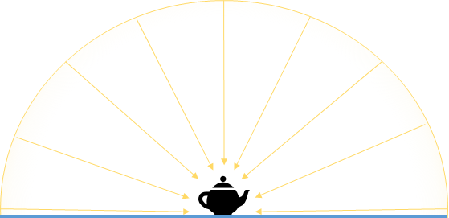
Skybox lights are good for exterior scenes, where the skybox is visible. They're less useful for interior scenes, such as in rooms where the skybox is only visible through windows; as the skybox light nonetheless lights the entire room, this creates an unnatural effect.
How skyboxes light the scene
These images show the difference between ambient and skybox lighting on two pure diffuse materials:
| Ambient lighting | Skybox lighting |
|---|---|
 |
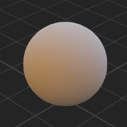 |
These images show the effect of skybox lighting on a material with different metal and gloss properties:
| Material Plastic | Metal 100% Gloss 50% | Metal 100% Gloss 100% |
|---|---|---|
| 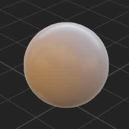 | 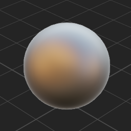 | 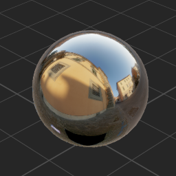 |
Notice how the skybox texture colors are reflected.
Set up a skybox light
To use a skybox as a light, you need to add a skybox asset, then select it in a Light component.
In the Asset View, click

Select Miscellaneous > Skybox.
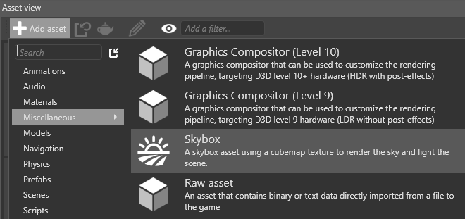
The Select an asset window opens.
Choose a skybox texture from the project assets and click OK.
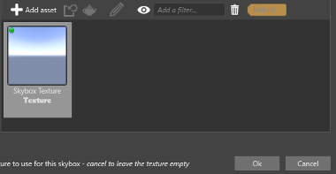
Game Studio adds the skybox asset with the texture you specified.
Select the entity you want to be the skybox light.
In the Property Grid (on the right by default), click Add component and select Light.
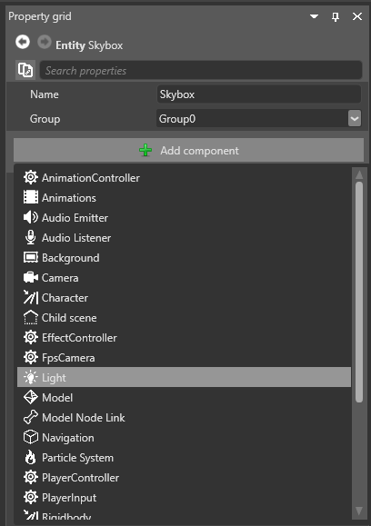
In the Light component properties, under Light, select Skybox.
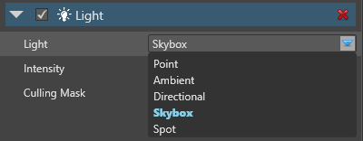
Click
 (Select an asset):
(Select an asset):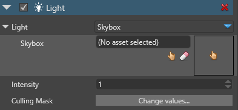
Select the skybox asset you want to use as a light source and click OK.
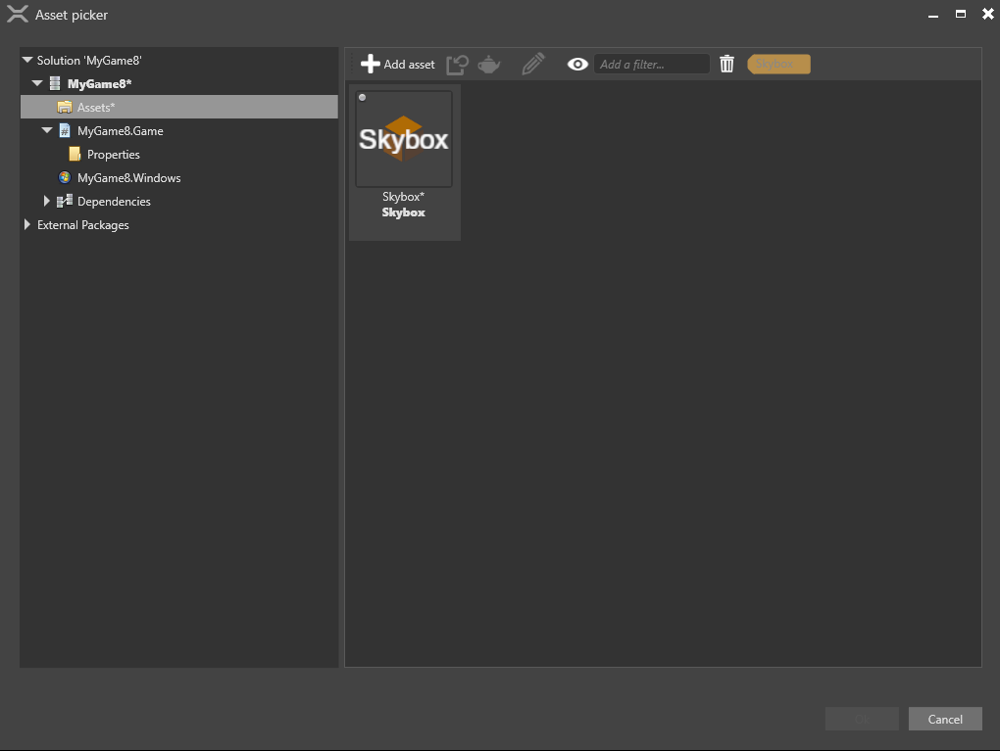
The Light component uses the skybox asset to light the scene.
Skybox asset properties
When you use a skybox as a light, Stride uses it both in compressed form (spherical harmonics (Wikipedia)) and as a texture to light different kinds of material. You can control the detail of both in the skybox asset properties.
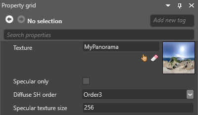
| Property | Description |
|---|---|
| Texture | The texture to use as skybox (eg a cubemap or panoramic texture) |
| Specular Only | Use the skybox only for specular lighting |
| Diffuse SH order | The level of detail of the compressed skybox, used for diffuse lighting (dull materials). Order5 is more detailed than Order3. |
| Specular Cubemap Size | The texture size used for specular lighting. Larger textures have more detail. |
Skybox light properties
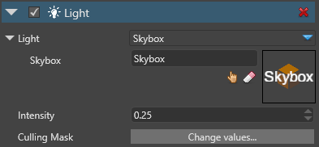
| Property | Description |
|---|---|
| Intensity | The light intensity |
| Culling Mask | Which entity groups are affected by the light. By default, all groups are affected |
Example code
The following code changes the skybox light and its intensity:
public Skybox skybox;
public void ChangeSkyboxParameters()
{
// Get the light component from an entity
var light = Entity.Get<LightComponent>();
// Get the Skybox Light settings from the light component
var skyboxLight = light.Type as LightSkybox;
// Replace the existing skybox
skyboxLight.Skybox = skybox;
// Change the skybox light intensity
light.Intensity = 1.5f;
}